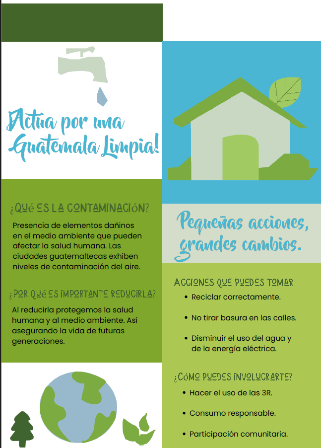
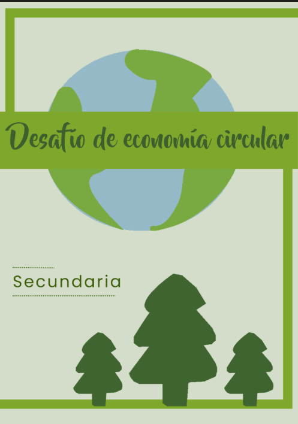
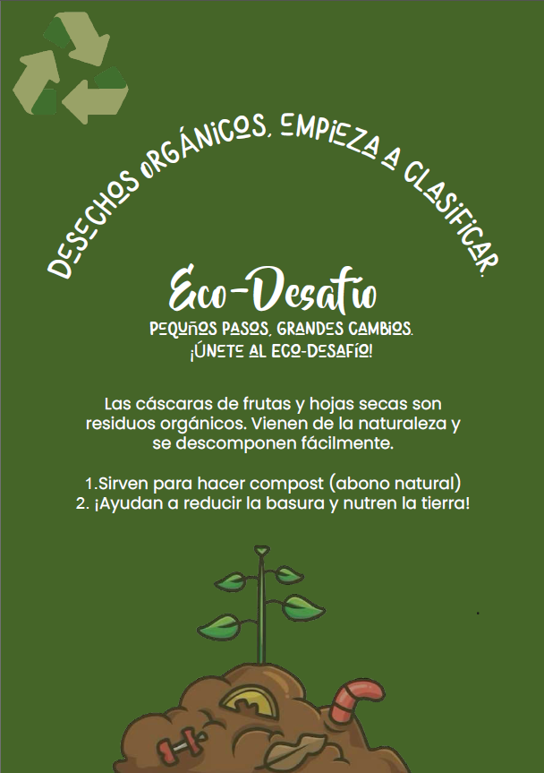
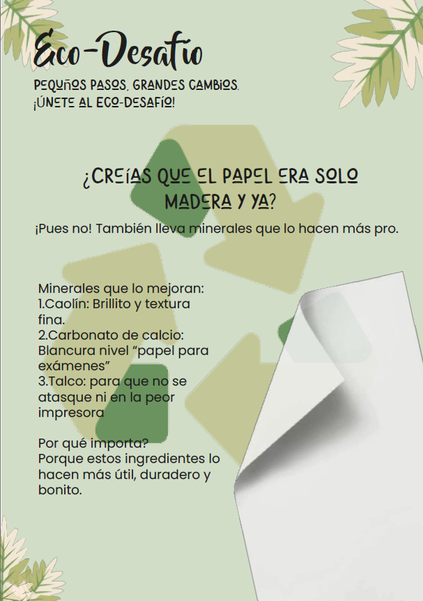
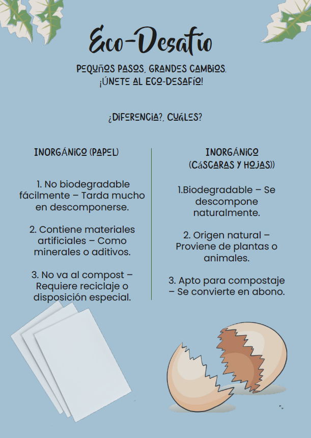

Descripción de la propuesta
Nuestra propuesta consiste en recolectar desechos orgánicos (cáscaras y hojas secas) y desechos inorgánicos (papel y cartón) con el fin de realizar dos actividades: reciclaje de papel y elaboración de composta. Estas actividades se realizarán durante la semana de proyectos del SCJ, involucrando activamente a los estudiantes.
Objetivo
Fomentar la correcta gestión de los desechos sólidos para enseñar la importancia de clasificarlos adecuadamente y comprender el impacto ambiental que esto tiene.
Público Objetivo
Jóvenes de 13 a 15 años del colegio SCJ.
Objetivo del material gráfico
Promover la conciencia ambiental en jóvenes mediante una propuesta divertida e interesante que muestre el valor de dar una segunda vida a los objetos.
Material gráfico y descripción
- Pósters: Comunican de forma detallada y directa, explicando causas de la contaminación y cómo involucrarse.
- Afiches: Impacto visual que transmite un mensaje breve pero poderoso, despertando conciencia y motivación.
- Mupis publicitarios: Tres mupis enfocados en los residuos orgánicos con pocos textos y gráficos llamativos para facilitar la comprensión.




